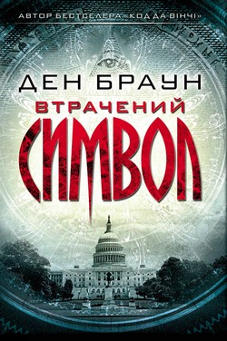

Anotation
На запрошення давнього друга, масона Пітера Соломона, професор Роберт Ленґдон приїздить до Вашинґтона і... потрапляє в пастку до невідомого злочинця. Пітер безслідно зник, а в обмін на його життя незнайомець вимагає розшифрувати загадкові символи масонів і відкрити таємницю самого Бога. На межі життя та смерті Ленґдон розгадує цей секрет. Але чи потрібно людям знати його?
plot
Сюжет роману розгортається протягом 12 годин у Вашингтоні, фокусуючись на масонстві.Роберт Ленгдон запрошений для того, щоб прочитати лекцію в Національній залі статуй Капітолію своїм наставником, масоном 33-й ступеня Пітером Соломоном, який очолює Смітсонівський інститут. Соломон також просить його, щоб він приніс маленький згорток, який він довірив Ленгдону на зберігання кількома роками раніше. Коли Ленгдон приїжджає до Капітолію, він чує крики, що виходять з Ротонди. Раніше він отримав телефонний дзвінок від людини, як він вважав, що працює у офісі Соломона. Прибігши на крики, він знаходить у центрі зали відсічену праву руку, встановлену на дерев'яній основі. На руці — татуювання на кожному пальці, і Ленгдон визнає в ній символічну «Руку Містерій», яка, мабуть, вказує прямо на фреску «Апофеоз Вашингтона» на внутрішній стороні купола Капітолію. Помічаючи каблучку Пітера на одному з пальців руки, Ленгдон розуміє, що це — рука його викраденого друга, і з отриманого повідомлення він усвідомлює, що викрадач хоче, щоб він знайшов дві піраміди, які, як вірять масони, приховані десь під землею у Вашингтоні, і розшифрував Втрачене Слово, необхідне для завершення справи, початої викрадачем.
Translate Ukraine
Українською мовою роман вийшов того ж року у харківському видавництві «Клуб сімейного дозвілля», переклад Володимира Горбатька.Ден Браун. Втрачений символ.
Переклад з англійської: Володимир Горбатько. Харків: КСД, 2009. 605 с. ISBN 978-966-14-0670-3